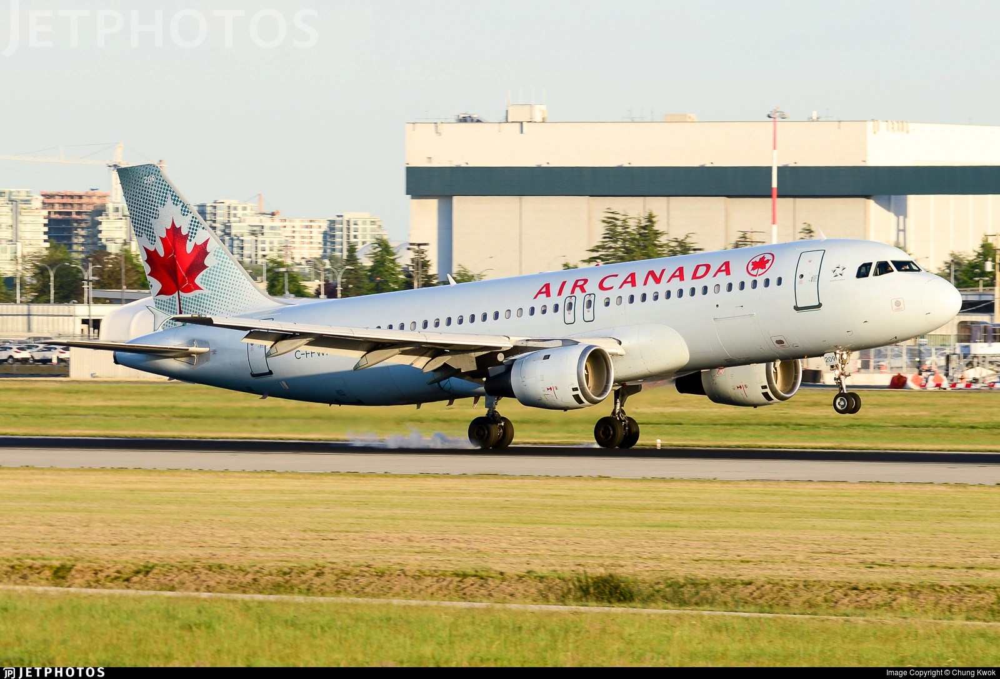

AirTramsClub
Un mini-site despre cele mai noi stiri ale aviatiei si ale tramvaielor
Despre noi
Sprijiniti-ne
Contactati-ne
Pagina Acasa
Care sunt cele mai vechi A320?
3 iulie 2020

Productia de A320 a inceput in 1988. De atunci, unele companii aeriene si-au retras aeronavele mai vechi, altele le-au pastrat din cateva motive (financiare, fiabilitate, etc.). Dar la momentul actual care sunt cele mai vechi A320 in functiune? Sa aflam.
Cel mai vechi A320 care mai zboara

Cel mai vechi avion este JY-JAC, un Airbus A320-211, care apartine de Jordan Aviation. A facut primul zbor in 1989, deci are acum 31 de ani. Originar a zburat cu Ansett Australia, dupa care a venit in flota Jordan Aviation, unde este si acum.
Urmatoarele 2

Urmatoarele 2 aeronave din clasamentul nostru zboara pentru aceeasi companie, Coredon Airlines. Primul este ZS-GAR, care are tot 31 de ani si in 2018 a zburat cu Sunrise Airways. Al 2-lea avion e tot un A320-231, ZS-GAW. Din informatiile noastre, acesta a zburat mult timp cu Coredon Airlines. Si acesta are tot 31 de ani.
Lufthansa este dupa in clasament

Si Lufthansa are aeronave destul de vechi. D-AIPP e un A320-211 si are 30 de ani. Cel mai probabil aeronava va fi retrasa deoarece Lufthansa are probleme mari financiare din cauza Covid-19. Multe aeronave A320 vechi sunt retrase in continuu si sunt depozitate in Teruel in Spania. Cu doar cateva zile mai tinere decat D-AIPP, D-AIPR si D-AIPS sunt retrase la Schonefeld.
Delta Air Lines si mostenirea

Delta Air Lines are multe aeronave vechi Airbus A320-211, mostenite prin cumpararea Northwest Airlines. Cea mai veche A320 din flota Delta e N309US, care are 30 de ani. Aceasta aeronava e in curent depozitata pe aeroportul San Bernadino din California și ar putea intra in pensionare. Alta aeronava de 30 de ani, N312US, e in prezent depozitata la aeroportul Kansas City.
Air Canada si multimea

Air Canada are 4 A320-211, (C-FDSN, C-FDST, C-FDSU, C-FFWI) toate venite la sfarsitul anului 1990. Toate aeronavele sunt depozitate.